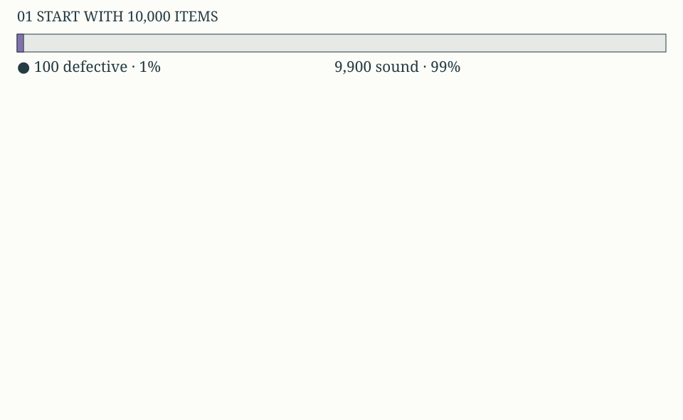
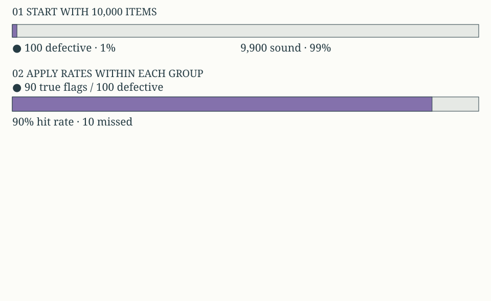
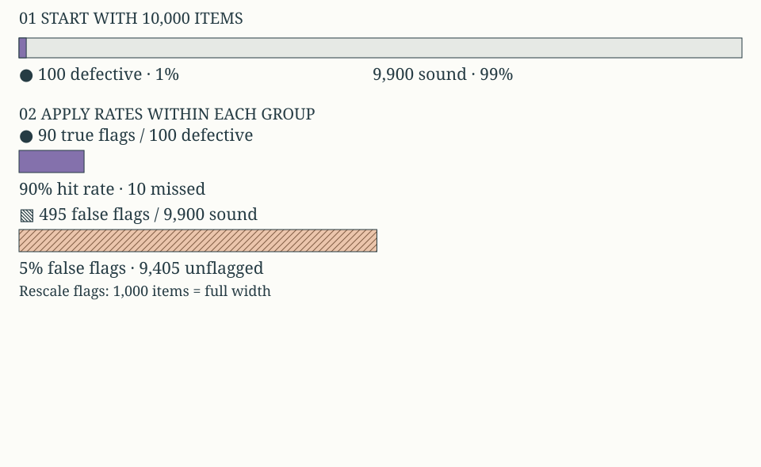
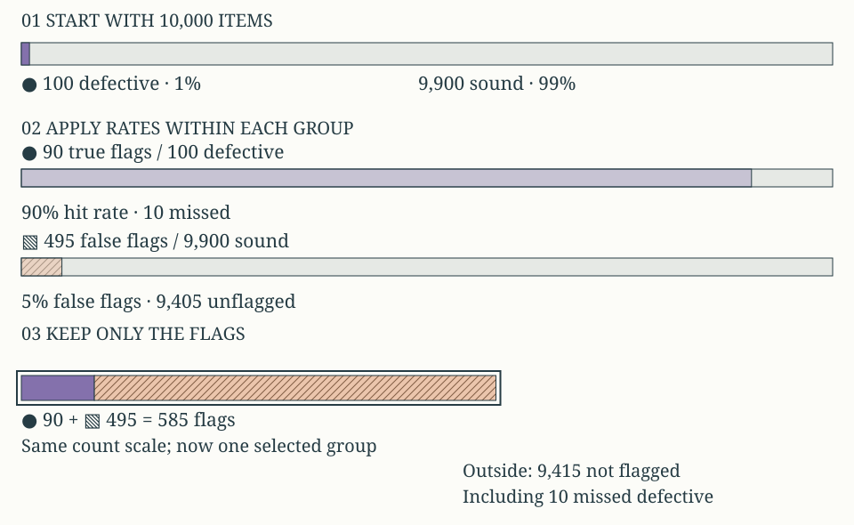
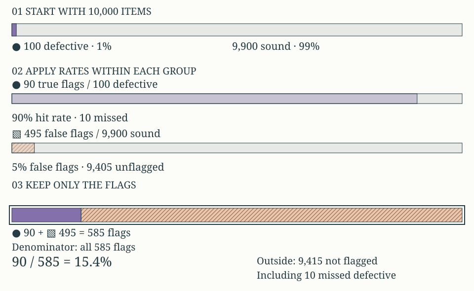
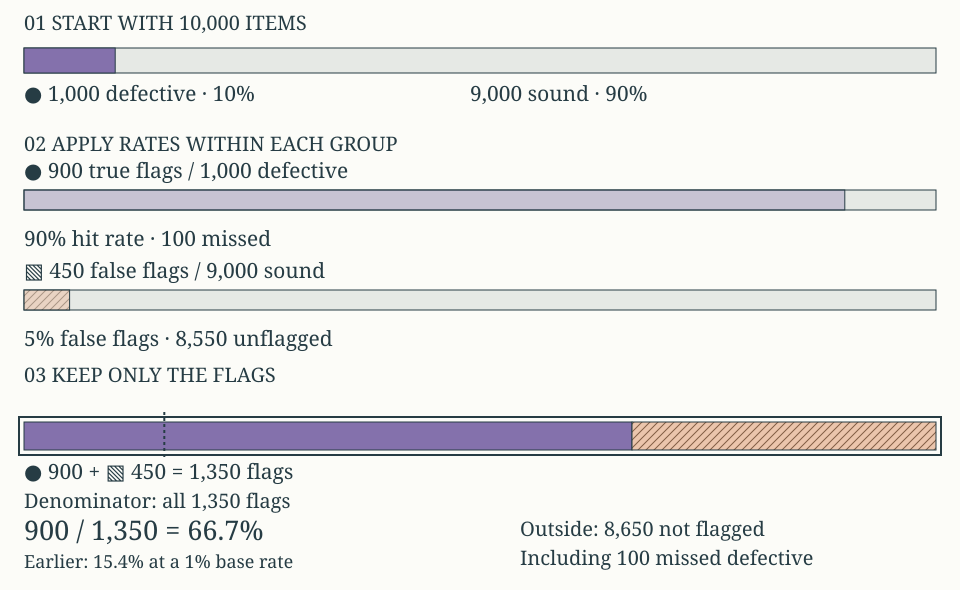
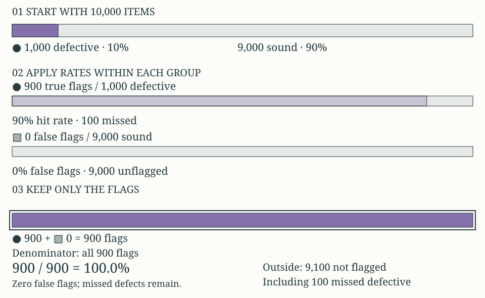

Open a question to read its explanation immediately. No answer or prediction is required.
Start with the batch
How does start with the batch work?

Worked example: base 1%, hit 90%, false flags 5%. The hypothetical batch has 100 defective items and 9,900 sound items. Each rate starts with its own population.
Hypothetical exact frequencies; every denominator names its group.
Select within defective items
How does select within defective items work?

Worked example: base 1%, hit 90%, false flags 5%. The detector flags 90 of the 100 defective items. Its 90% hit rate leaves 10 defective items missed.
Hypothetical exact frequencies; every denominator names its group.
Select within sound items
How does select within sound items work?

Worked example: base 1%, hit 90%, false flags 5%. Five percent of 9,900 sound items gives 495 false flags. A smaller rate can produce more flags because its population is larger.
Hypothetical exact frequencies; every denominator names its group.
Collect only flags
How does collect only flags work?

Worked example: base 1%, hit 90%, false flags 5%. Move the 90 true flags and 495 false flags into one group. Leave 9,415 unflagged items outside, including 10 missed defects.
Hypothetical exact frequencies; every denominator names its group.
Change the denominator
Which denominator answers defective among flagged items?

Worked example: base 1%, hit 90%, false flags 5%. Expand the same selected group. Its count stays 585. The defective share is 90 divided by 585, or 15.4%.
585 flagged
A flag selects all 585 flagged items, including false flags.Hypothetical exact frequencies; every denominator names its group.
Change the base rate
How does change the base rate work?

Worked example: base 10%, hit 90%, false flags 5%. At a 10% defect rate, the same detector gives 900 true flags and 450 false flags. Of 1,350 flags, 66.7% are defective.
Hypothetical exact frequencies; every denominator names its group.
Remove false flags
How does remove false flags work?

Worked example: base 10%, hit 90%, false flags 0%. With zero false flags, all 900 flags are true. Yet 100 defective items remain missed. Precision is 100%; hit rate is still 90%.
Hypothetical exact frequencies; every denominator names its group.